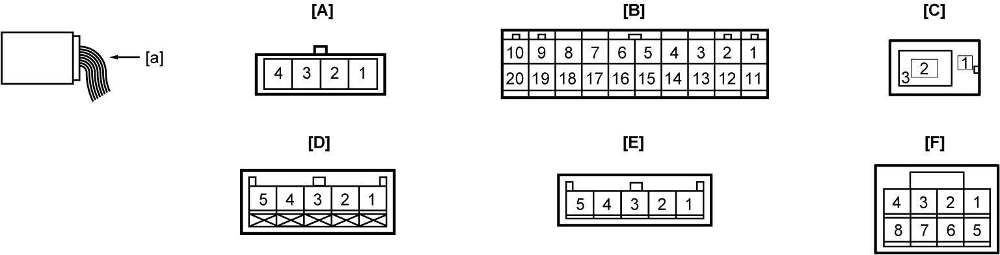
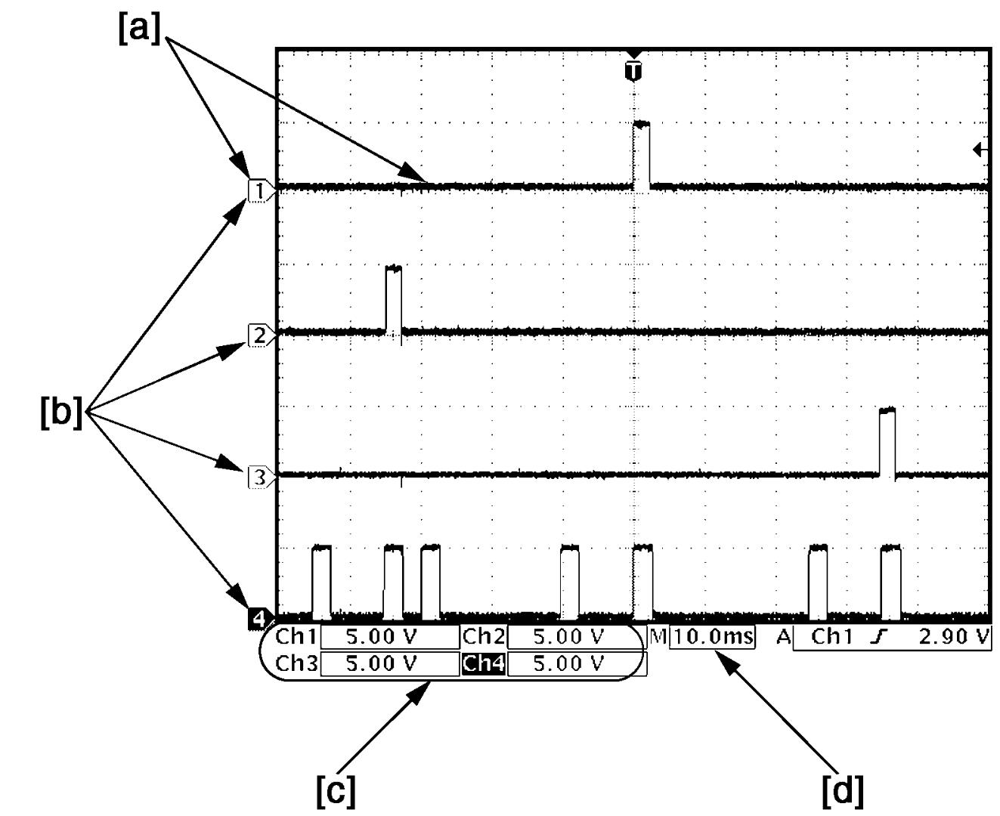
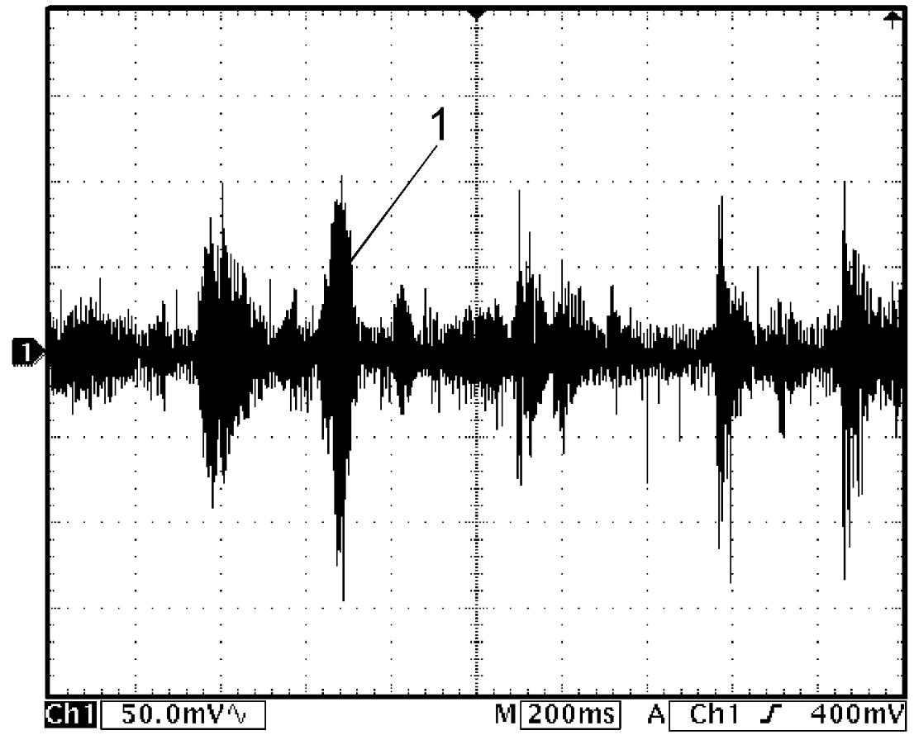
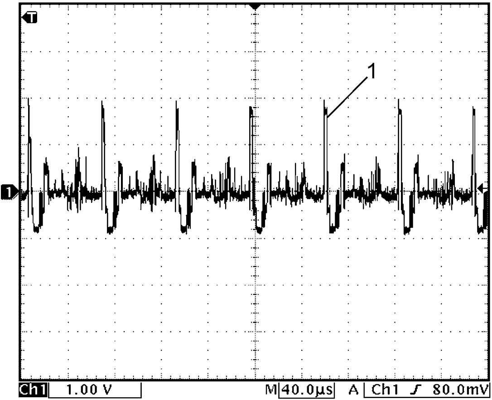

9O
| Inspection of Audio System and Its Circuit |
Voltage and Signal Check
1)Remove audio / navigation unit (with connector connected). 
2)Check voltage using circuit tester and oscilloscope.
NOTE:
•Check that battery voltage is 11 V or more.
•Outputs from terminals marked with asterisk (*) cannot be measured with voltmeter because they are pulse signals. Use oscilloscope for measuring these outputs.
•Outputs from terminals marked with asterisk (*) cannot be measured with voltmeter because they are pulse signals. Use oscilloscope for measuring these outputs.

 "Expand image")
| [A]: | “G231” connector (microphone (if equipped)) (View: [a]) | [D]: | “G232” connector (rearview camera (if equipped)) (View: [a]) |
| [B]: | “G248” connector (audio / navigation unit) (View: [a]) | [E]: | “G243” connector (navigation unit) (View: [a]) |
| [C]: | “G267” connector (radio antenna feeder) (View: [a]) | [F]: | “G218” connector (AUX connector (if equipped)) (View: [a]) |
[A] “G231” connector (microphone (if equipped))
| Terminal No. | Wire color | Circuit | Normal voltage | Condition |
|---|---|---|---|---|
| G231-1 | BLU | Ground for microphone | Approx. 0 V | Ignition: “OFF”, “ACC” or “ON” |
| G231-2* | PNK | Microphone signal | — | Audio: “ON” |
| Refer to reference waveform. Speaker / microphone wave |
||||
| G231-3 | BLU | Ground for microphone | Approx. 0 V | Ignition: “OFF”, “ACC” or “ON” |
| G231-4 | YEL | Power source for microphone | Approx. 5 V | Ignition: “ACC” or “ON” |
[B] “G248” connector (audio / navigation unit)
| Terminal No. | Wire color | Circuit | Normal voltage | Condition |
|---|---|---|---|---|
| G248-1 | GRY | Power source (Non ENG A-STOP model) | Approx. 12 V | Ignition: “OFF”, “ACC” or “ON” |
| LT GRN | Power source (ENG A-STOP model) | Refer to terminal “E25-5” under Inspection of ENG A-STOP Control Module and Its Circuits. | ||
| G248-2 | RED | Power source (illumination) | Approx. 12 V | When clearance light is on |
| Approx. 0 V | Other than above condition | |||
| G248-3* | WHT | Front speaker (L) (+), tweeter (L) (+) | — | Audio: “ON” |
| Refer to reference waveform. Speaker / microphone wave |
||||
| G248-4* | RED | Front speaker (R) (+), tweeter (R) (+) | — | Audio: “ON” |
| Refer to reference waveform. Speaker / microphone wave |
||||
| G248-5* | GRN | Rear speaker (L) (+) | — | Audio: “ON” |
| Refer to reference waveform. Speaker / microphone wave |
||||
| G248-6* | PPL | Rear speaker (R) (+) | — | Audio: “ON” |
| Refer to reference waveform. Speaker / microphone wave |
||||
| G248-8 | YEL | Steering switch (hands-free switch) | Approx. 3.3 V | Ignition: “ACC” or “ON” |
| G248-9 | LT GRN | Power source (ACC) (Non ENG A-STOP model) | Approx. 12 V | Ignition: “ACC” or “ON” |
| Power source (ACC) (ENG A-STOP model) | Approx. 12 V | Ignition: “ACC”, “ON” or during engine auto start control | ||
| G248-11 | BLK | Ground for audio / navigation unit | Approx. 0 V | Ignition: “OFF”, “ACC” or “ON” |
| G248-12* | PPL | Illumination signal | Refer to Inspection of Combination Meter and Its Circuit | |
| G248-13* | BLU | Front speaker (L) (–), tweeter (L) (–) | — | Audio: “ON” |
| Refer to reference waveform. Speaker / microphone wave |
||||
| G248-14* | YEL | Front speaker (R) (–), tweeter (R) (–) | — | Audio: “ON” |
| Refer to reference waveform. Speaker / microphone wave |
||||
| G248-15* | BRN | Rear speaker (L) (–) | — | Audio: “ON” |
| Refer to reference waveform. Speaker / microphone wave |
||||
| G248-16* | LT BLU | Rear speaker (R) (–) | — | Audio: “ON” |
| Refer to reference waveform. Speaker / microphone wave |
||||
| G248-18* | PPL | Vehicle speed signal (audio unit) | Refer to Inspection of BCM and Its Circuits. | |
| G248-19 | GRN | Steering switch (audio control switch) | Approx. 3.3 V | Ignition: “ACC” or “ON” |
| G248-20 | PNK | Ground for steering switch | Approx. 0 V | Ignition: “OFF”, “ACC” or “ON” |
[C] “G267” connector (radio antenna feeder)
| Terminal No. | Wire color | Circuit | Normal voltage | Condition |
|---|---|---|---|---|
| G267-1 | — | Power source for radio antenna amplifier | Approx. 12 V | Audio: “ACC” or “ON” |
| G267-2 | BLK | Radio antenna amplifier signal | — | — |
| G267-3 | — | Radio antenna amplifier shield ground circuit | Approx. 0 V | Ignition: “OFF”, “ACC” or “ON” |
[D] “G232” connector (rearview camera (if equipped))
| Terminal No. | Wire color | Circuit | Normal voltage | Condition |
|---|---|---|---|---|
| G232-1 | BLK | Ground for rearview camera | Approx. 0 V | Ignition: “OFF”, “ACC” or “ON” |
| G232-2 | — | Ground for rearview camera | Approx. 0 V | Ignition: “OFF”, “ACC” or “ON” |
| G232-3* | RED | Rearview image signal input | — | Audio: “ON” Shift lever: reverse position |
| Refer to reference waveform. Rearview image signal |
||||
| G232-4 | WHT | Power source for rearview camera | Approx. 6 V | Audio: “ON” Shift lever: reverse position |
| G232-5 | GRY | Ground for rearview camera | Approx. 0 V | Ignition: “OFF”, “ACC” or “ON” |
[E] “G243” connector (navigation unit)
| Terminal No. | Wire color | Circuit | Normal voltage | Condition |
|---|---|---|---|---|
| G243-1 | LT GRN | Parking brake switch signal | Approx. 0 V | Ignition: “ON” Parking brake lever: pulled up |
| Refer to Inspection of BCM and Its Circuits. | ||||
| G243-2 | RED | Back up light switch signal | Approx. 0 V | Ignition: “ON” Shift lever: reverse position |
| Approx. 12 V | Other than above condition | |||
| G243-3* | PPL | Vehicle speed signal | Refer to Inspection of BCM and Its Circuits. | |
[F]: “G218” connector (AUX connector (if equipped))
| Terminal No. | Wire color | Circuit | Normal voltage | Condition |
|---|---|---|---|---|
| G218-7 | BEG | Ground for AUX connector | Approx. 0 V | Ignition: “OFF”, “ACC” or “ON” |
Reference Waveform
Oscilloscope display
Shown below is typical waveform display provided by oscilloscope.
NOTE:
•Display includes the following types of data:

•Waveform varies depending on measurement condition and vehicle spec.

 "Expand image")
| [a]: | Waveform of channel 1 | [c]: | VOLT/DIV of each channel |
| [b]: | Ground level of each channel | [d]: | TIME/DIV |
Speaker / microphone wave
NOTE:
Voltage changes depending on sound volume and quality.
Microphone signal
| Channel | Probe | Terminal No. |
|---|---|---|
| 1 | + | G231-2 |
| – | G231-3 |
Speaker signal
| Channel | Probe | Terminal No. |
|---|---|---|
| 1 | + | Front speaker (L): G248-3 Front speaker (R): G248-4 Rear speaker (L): G248-5 Rear speaker (R): G248-6 |
| – | Front speaker (L): G248-13 Front speaker (R): G248-14 Rear speaker (L): G248-15 Rear speaker (R): G248-16 |
Measurement condition
•Audio: ON

 "Expand image")
| 1. | Speaker / microphone signal |
Rearview image signal
| Channel | Probe | Terminal No. |
|---|---|---|
| 1 | + | G232-3 |
| – | G232-5 |
Measurement condition
•Audio: ON
•Shift lever: reverse position
•Shift lever: reverse position

 "Expand image")